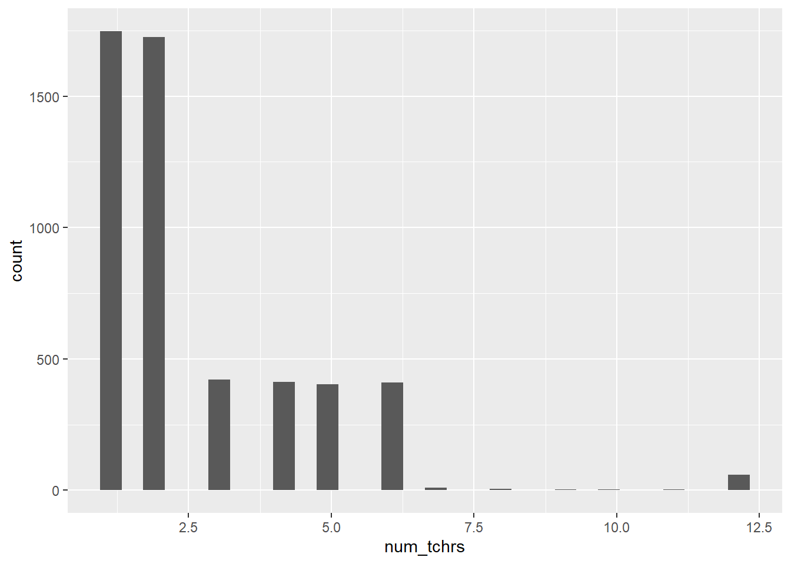

Chapter 3 Data
The data used for this tutorial were simulated in R to loosely represent a cohort of JMU students. As accurate counts and frequencies of the predictors were not available outside of a request to PAIR, “best guesses” were employed where necessary. In a fictional scenario, JMU has decided to add a Math Achievement Test as a graduation requirement: students must take this test the semester they anticipate graduating as a measure of their Math Achievement at JMU, with the point of comparison being a cut-score. The stakes are similar to Assessment Day and there are no penalties for low scores. JMU, recognizing that many factors may play into how well a student does on this test, wants to consider the role different math teachers play as well as some student-level predictors. Not wanting this to hold any penalty towards teachers either, JMU has assigned each teacher an anonymous ID and associated it with the years of experience. JMU is additionally considering what teacher qualities help students be more successful, with the idea of offering more professional development in those areas. Currently, the only teacher-level predictor available is number of years of experience of the instructor.
JMU hopes to answer the following research questions:
The predictors are listed in the table below, along with a brief description.
| Predictor | Description |
|---|---|
| MathAch | Mach Achievement; outcome variable, score on a (fictional) math test given to students |
| S_ID | Student ID; a single number representation of students, from 1 to 5200 |
| SAT_M | SAT math score; ranges from 200-800 and represents the SAT math score of students prior to entering JMU. |
| S_gend | Student gender; a non-binary gender indicator with 0 = female, 1 = male, and 2 = other/nonbinary/fluid |
| female, NB | Dummy coded student gender, since gender is categorical. Male is the reference |
| S_SES | Student SES; values range from 2-29 cite thing here |
| num_tchrs | Number of teachers; the number of math teachers a student had at JMU |
| phys | Physics; if a student took physics or not, with 0 = no and 1 = yes |
| phys_tchr | Physics teacher; if a student took physics, the ID of the teacher they had (ranging from 1 – 22) |
| tchr1-tchr12 | Teachers 1 through 12; teacher IDs (ranging from 1-56) of teachers students had. If a student had less than 12 teachers, teacher ID = 0 |
| w1-w12 | Weights; these represent the amount of time spent with each teacher. Values can range from 1 (only had one teacher) to 0.083 (had 12 teachers) |
| t1_exp-t12_exp | Teacher experience; Given the compact nature of this dataset, the experience of the first through twelfth teachers of each student is given in years. |
3.1 Compact vs. long forms
The data are in a .cvs file in “compact” form, as opposed to “long” form. Compact form contains two different sets of variables: one set for the first through twelfth teacher to instruct each student and another set represent the multiple membership weight variables. Wide form would have the same information, but in only one set of variables representing the individual teacher IDs and the proportion of time each teacher spent instructing each student (see tables below). While the wide form is less efficient, some programs require the data to be in one form or the other. In this instance, MLwiN using Bayesian routines (what we will be using) requires compact form (Leckie, 2013).
3.2 Examining the Data
The next step is to determine what type of predictors we have and what they look like, as well as if we have a true hierarchical model, a “nesting as nuisance” model, or a non-hierarchical model such as cross-classified or multiple membership models. We will be looking for if students (in this case) belong to one and only one cluster (teachers), which would indicate a hierarchical approach or a “nesting as nuisance” approach. However, if, as is the case, students belong to multiple clusters, we will be taking a non-hierarchical approach. For this example, we are only considering one cluster, so we will be using a multiple membership design. We can see in the num_tchrs column there are students ranging from having had 1 teacher to 12 teachers, indicating we have a multiple membership column. We could also look at the tchr1 through tchr12 columns, and see there are values in more than one of those - indicating that students have encountered more than one math teacher.
#Read in the data file
StudData <- read.csv("exampledata2.csv")
#See what it looks like
head(StudData)## X.1 X S_ID S_gend S_SES num_tchrs phys tchr1 tchr2 tchr3 tchr4 tchr5 tchr6 tchr7 tchr8
## 1 1 1 1 0 14.880674 3 0 24 32 46 0 0 0 0 0
## 2 2 2 2 0 14.575710 4 0 30 52 54 18 0 0 0 0
## 3 3 3 3 1 13.173884 1 0 12 0 0 0 0 0 0 0
## 4 4 4 4 1 13.065602 2 0 32 30 0 0 0 0 0 0
## 5 5 5 5 0 16.105715 2 0 3 48 0 0 0 0 0 0
## 6 6 6 6 1 8.190244 2 1 3 44 0 0 0 0 0 0
## tchr9 tchr10 tchr11 tchr12 w1 w2 w3 w4 w5 w6 w7 w8 w9 w10 w11 w12 Math t10_exp
## 1 0 0 0 0 0.33 0.33 0.33 0.00 0 0 0 0 0 0 0 0 524.4056 NA
## 2 0 0 0 0 0.25 0.25 0.25 0.25 0 0 0 0 0 0 0 0 488.9099 NA
## 3 0 0 0 0 1.00 0.00 0.00 0.00 0 0 0 0 0 0 0 0 489.3046 NA
## 4 0 0 0 0 0.50 0.50 0.00 0.00 0 0 0 0 0 0 0 0 477.3350 NA
## 5 0 0 0 0 0.50 0.50 0.00 0.00 0 0 0 0 0 0 0 0 429.6443 NA
## 6 0 0 0 0 0.50 0.50 0.00 0.00 0 0 0 0 0 0 0 0 428.4827 NA
## t1_exp t2_exp t3_exp t4_exp t5_exp t6_exp t7_exp t8_exp t9_exp t11_exp t12_exp
## 1 7.504014 10.358077 8.625167 NA NA NA NA NA NA NA NA
## 2 9.796930 11.785604 8.438843 8.458218 NA NA NA NA NA NA NA
## 3 6.490974 NA NA NA NA NA NA NA NA NA NA
## 4 10.358077 9.796930 NA NA NA NA NA NA NA NA NA
## 5 12.899187 6.413480 NA NA NA NA NA NA NA NA NA
## 6 12.899187 8.620738 NA NA NA NA NA NA NA NA NA
## phys_tchr SAT_M female NB
## 1 0 795 1 0
## 2 0 693 1 0
## 3 0 706 0 0
## 4 0 654 0 0
## 5 0 419 1 0
## 6 9 416 0 0summary(StudData)## X.1 X S_ID S_gend S_SES
## Min. : 1 Min. : 1 Min. : 1 Min. :0.0000 Min. : 5.657
## 1st Qu.:1301 1st Qu.:1301 1st Qu.:1301 1st Qu.:0.0000 1st Qu.:11.652
## Median :2600 Median :2600 Median :2600 Median :0.0000 Median :12.988
## Mean :2600 Mean :2600 Mean :2600 Mean :0.4708 Mean :12.996
## 3rd Qu.:3900 3rd Qu.:3900 3rd Qu.:3900 3rd Qu.:1.0000 3rd Qu.:14.353
## Max. :5200 Max. :5200 Max. :5200 Max. :2.0000 Max. :20.249
##
## num_tchrs phys tchr1 tchr2 tchr3
## Min. : 1.000 Min. :0.0000 Min. : 1.00 Min. : 0.00 Min. : 0.000
## 1st Qu.: 1.000 1st Qu.:0.0000 1st Qu.:14.00 1st Qu.: 0.00 1st Qu.: 0.000
## Median : 2.000 Median :0.0000 Median :29.00 Median :14.00 Median : 0.000
## Mean : 2.593 Mean :0.2492 Mean :28.61 Mean :18.73 Mean : 9.415
## 3rd Qu.: 4.000 3rd Qu.:0.0000 3rd Qu.:43.00 3rd Qu.:35.00 3rd Qu.:14.000
## Max. :12.000 Max. :1.0000 Max. :56.00 Max. :57.00 Max. :57.000
##
## tchr4 tchr5 tchr6 tchr7 tchr8
## Min. : 0.000 Min. : 0.00 Min. : 0.000 Min. : 0.0000 Min. : 0.0000
## 1st Qu.: 0.000 1st Qu.: 0.00 1st Qu.: 0.000 1st Qu.: 0.0000 1st Qu.: 0.0000
## Median : 0.000 Median : 0.00 Median : 0.000 Median : 0.0000 Median : 0.0000
## Mean : 7.238 Mean : 5.06 Mean : 2.625 Mean : 0.4515 Mean : 0.4065
## 3rd Qu.: 1.000 3rd Qu.: 0.00 3rd Qu.: 0.000 3rd Qu.: 0.0000 3rd Qu.: 0.0000
## Max. :57.000 Max. :56.00 Max. :57.000 Max. :55.0000 Max. :56.0000
##
## tchr9 tchr10 tchr11 tchr12 w1
## Min. : 0.0000 Min. : 0.0000 Min. : 0.0000 Min. : 0.0000 Min. :0.0830
## 1st Qu.: 0.0000 1st Qu.: 0.0000 1st Qu.: 0.0000 1st Qu.: 0.0000 1st Qu.:0.2500
## Median : 0.0000 Median : 0.0000 Median : 0.0000 Median : 0.0000 Median :0.5000
## Mean : 0.3956 Mean : 0.3735 Mean : 0.3406 Mean : 0.2996 Mean :0.5784
## 3rd Qu.: 0.0000 3rd Qu.: 0.0000 3rd Qu.: 0.0000 3rd Qu.: 0.0000 3rd Qu.:1.0000
## Max. :56.0000 Max. :56.0000 Max. :57.0000 Max. :57.0000 Max. :1.0000
##
## w2 w3 w4 w5 w6
## Min. :0.0000 Min. :0.00000 Min. :0.00000 Min. :0.00000 Min. :0.00000
## 1st Qu.:0.0000 1st Qu.:0.00000 1st Qu.:0.00000 1st Qu.:0.00000 1st Qu.:0.00000
## Median :0.2000 Median :0.00000 Median :0.00000 Median :0.00000 Median :0.00000
## Mean :0.2424 Mean :0.07666 Mean :0.04988 Mean :0.03008 Mean :0.01458
## 3rd Qu.:0.5000 3rd Qu.:0.16600 3rd Qu.:0.08300 3rd Qu.:0.00000 3rd Qu.:0.00000
## Max. :0.5000 Max. :0.33000 Max. :0.25000 Max. :0.20000 Max. :0.16600
##
## w7 w8 w9 w10 w11
## Min. :0.000000 Min. :0.00000 Min. :0.00000 Min. :0.000000 Min. :0.0000000
## 1st Qu.:0.000000 1st Qu.:0.00000 1st Qu.:0.00000 1st Qu.:0.000000 1st Qu.:0.0000000
## Median :0.000000 Median :0.00000 Median :0.00000 Median :0.000000 Median :0.0000000
## Mean :0.001487 Mean :0.00124 Mean :0.00112 Mean :0.001035 Mean :0.0009777
## 3rd Qu.:0.000000 3rd Qu.:0.00000 3rd Qu.:0.00000 3rd Qu.:0.000000 3rd Qu.:0.0000000
## Max. :0.142800 Max. :0.12500 Max. :0.11000 Max. :0.100000 Max. :0.0900000
##
## w12 Math t10_exp t1_exp t2_exp
## Min. :0.0000000 Min. :285.4 Min. : 6.874 Min. : 6.208 Min. : 6.208
## 1st Qu.:0.0000000 1st Qu.:387.9 1st Qu.: 8.947 1st Qu.: 8.625 1st Qu.: 8.621
## Median :0.0000000 Median :431.6 Median :10.329 Median :10.292 Median :10.170
## Mean :0.0009258 Mean :431.7 Mean :10.288 Mean :10.137 Mean :10.077
## 3rd Qu.:0.0000000 3rd Qu.:476.6 3rd Qu.:11.064 3rd Qu.:11.550 3rd Qu.:11.064
## Max. :0.0830000 Max. :580.7 Max. :15.045 Max. :15.045 Max. :15.045
## NA's :5136 NA's :1748
## t3_exp t4_exp t5_exp t6_exp t7_exp
## Min. : 6.208 Min. : 6.208 Min. : 6.208 Min. : 6.208 Min. : 6.208
## 1st Qu.: 8.621 1st Qu.: 8.621 1st Qu.: 8.621 1st Qu.: 8.623 1st Qu.: 9.067
## Median :10.025 Median :10.170 Median : 9.966 Median :10.292 Median :11.048
## Mean :10.034 Mean :10.082 Mean : 9.992 Mean :10.134 Mean :10.679
## 3rd Qu.:11.064 3rd Qu.:11.064 3rd Qu.:11.063 3rd Qu.:11.550 3rd Qu.:12.159
## Max. :15.045 Max. :15.045 Max. :15.045 Max. :15.045 Max. :15.045
## NA's :3474 NA's :3894 NA's :4305 NA's :4709 NA's :5118
## t8_exp t9_exp t11_exp t12_exp phys_tchr
## Min. : 6.208 Min. : 6.208 Min. : 6.208 Min. : 6.413 Min. : 0.00
## 1st Qu.: 7.872 1st Qu.: 8.625 1st Qu.: 9.108 1st Qu.: 8.625 1st Qu.: 0.00
## Median :10.025 Median : 9.890 Median :10.329 Median :10.170 Median : 0.00
## Mean : 9.839 Mean : 9.723 Mean :10.122 Mean :10.004 Mean : 2.88
## 3rd Qu.:11.048 3rd Qu.:11.048 3rd Qu.:11.048 3rd Qu.:11.063 3rd Qu.: 0.00
## Max. :15.045 Max. :14.599 Max. :14.599 Max. :14.139 Max. :22.00
## NA's :5127 NA's :5132 NA's :5140 NA's :5143
## SAT_M female NB
## Min. :200.0 Min. :0.0000 Min. :0.0000
## 1st Qu.:350.0 1st Qu.:0.0000 1st Qu.:0.0000
## Median :500.0 Median :1.0000 Median :0.0000
## Mean :499.8 Mean :0.5717 Mean :0.0425
## 3rd Qu.:646.2 3rd Qu.:1.0000 3rd Qu.:0.0000
## Max. :800.0 Max. :1.0000 Max. :1.0000
## library(ggplot2)
ggplot(data = StudData) +
geom_histogram(aes(x = num_tchrs))
3.3 Software Considerations
I was unable to find any software other than MLwiN(cite) that was capable of running multiple membership models. That said, both R and Stata have functions or packages that allow you to use their interface and run MLwiN in the background, to prevent the need to learn an entirely new interface. MLwiN is not a free software and is produced by the group. A 30-day free trial with full functionality is available to anyone in the world, and for researchers in the US, a single-user license is £400 or a PhD license is available for XXX, though it expires after 3 years. In order to perform the analyses demonstrated below, I obtained a 30-day free license and used the R2MLwiN (cite) package to allow me to use an R interface. While the R code is provided, it will not work unless you also have a valid MLwiN license.
There are two steps to cross-reference any heading:
- Label the heading:
# Hello world {#nice-label}.- Leave the label off if you like the automated heading generated based on your heading title: for example,
# Hello world=# Hello world {#hello-world}. - To label an un-numbered heading, use:
# Hello world {-#nice-label}or{# Hello world .unnumbered}.
- Leave the label off if you like the automated heading generated based on your heading title: for example,
- Next, reference the labeled heading anywhere in the text using
\@ref(nice-label); for example, please see Chapter ??.- If you prefer text as the link instead of a numbered reference use: any text you want can go here.
3.4 Captioned figures and tables
Figures and tables with captions can also be cross-referenced from elsewhere in your book using \@ref(fig:chunk-label) and \@ref(tab:chunk-label), respectively.
See Figure 3.1.
par(mar = c(4, 4, .1, .1))
plot(pressure, type = 'b', pch = 19)
Figure 3.1: Here is a nice figure!
Don’t miss Table 3.1.
knitr::kable(
head(pressure, 10), caption = 'Here is a nice table!',
booktabs = TRUE
)| temperature | pressure |
|---|---|
| 0 | 0.0002 |
| 20 | 0.0012 |
| 40 | 0.0060 |
| 60 | 0.0300 |
| 80 | 0.0900 |
| 100 | 0.2700 |
| 120 | 0.7500 |
| 140 | 1.8500 |
| 160 | 4.2000 |
| 180 | 8.8000 |